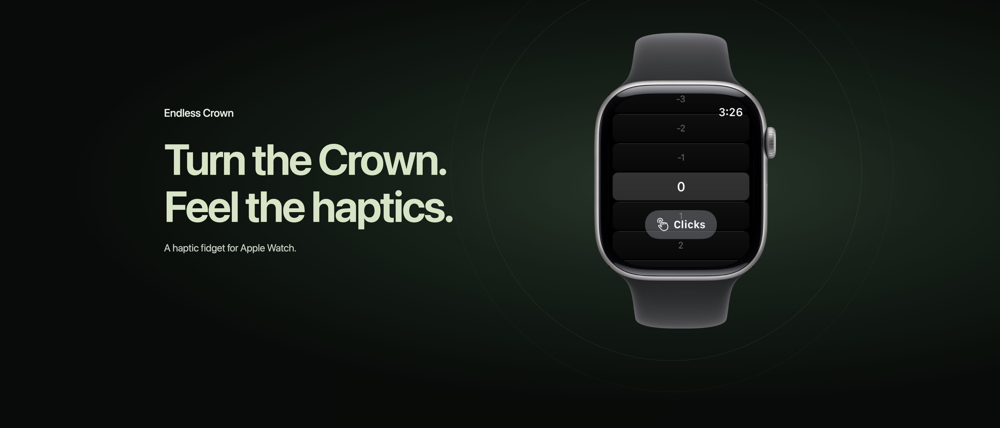
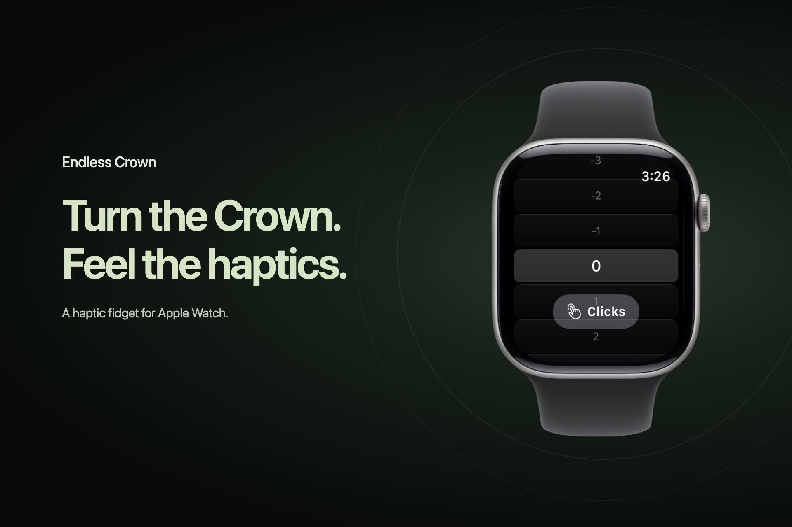

Endless Crown
New App Store creative assets · English (U.S.) · Design draft
One message, two placements. The existing dark-and-sage palette surrounds the authentic Watch interface and official device artwork.


Drafts are saved locally. Review the native App Store Connect preview for cropping, metadata overlays, device sizes, and light/dark appearances before submission or publication. Existing Watch screenshots remain separate.